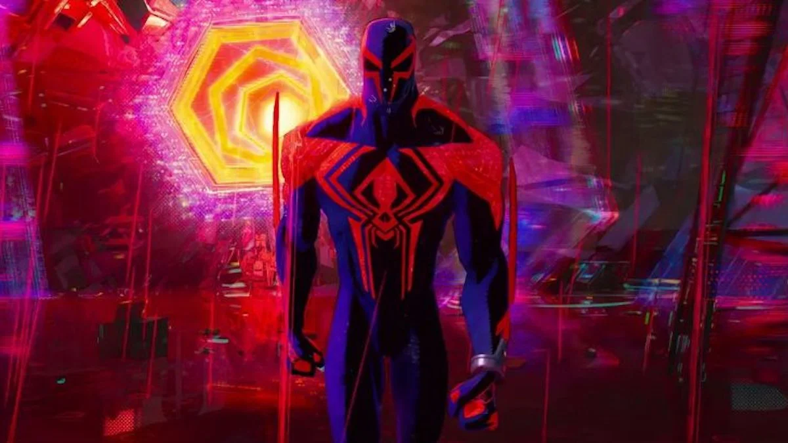

A quote that comes with great responsibilities
Posted the : 18/10/2023
Reading time : 4 min
“Being Spiderman is a sacrifice”. This quote might seem insignificant for most people but it is the most interesting one from the movie Spiderman : Across the spider- verse, here is why :
Canon events, these inevitable moments in the life of a Spider-hero that makes them grow stronger. It’s at the moment that Miles Morales just learned about them that Miguel O’hara (Spiderman 2099) said : “Being Spiderman is a sacrifice.” ; this line is full of depth and is a really good example of the attention to detail in the film direction.
A striking line
Maybe you already realized but this quote adopts a particular structure that any Spiderman fan would recognize : it takes back to the famous uncle Ben quote : “With great power comes great responsibilities”. On another hand, in the version Miguel pronounced, the great power is being Spiderman and the great responsibilities are the sacrifices. The similarity is even more interesting because enven though he is not a direct parent of Miles, Miguel is displayed in the film as a father figure for him. Actually, he is treating him and the other Spider-heroes like children. He effectivelly tries to take away their liberty under cover of protectingthe Spider-verse.

An antihero's psyche
This comes from what we could call a defect in his way of thinking : he is taking uncle Ben’s advice too literally. His power is so important (being able to travel between dimensions), that it implies responsibilities that are as important (protecting all these dimensions), where average Spider-heroes are limiting themselves to protecting cities. Overwhelmed by the astounding task of protecting the entire Spider-verse , Miguel stays human and his consciousness isn’t able to endure that much on a period of time as long as his life, and, adding that to the loss of his family, it makes this character mentally unstable.
An answer that have to be waited for
Thus, with this line, Miguel is trying to impose his way of seeing things to Miles, which is taking responsibilites and sacrifice lives if needed for the good and balance of all the Spider-verse. Ultimately, the movie doesn’t tell us in any way who is right and who is wrong. Maybe it’s an answer we can find in the sequel, Beyond the spiderverse that should be out around 2024. 2024.